Solr
版本：
Solr 5.5.5
第一节 简介
1.1 需求分析
使用Solr实现信息搜索功能，可以根据关键字、分类、价格搜索商品信息，也可以根据价格进行排序。

1.2 实现方法
在一些大型门户网站、电子商务网站等都需要站内搜索功能，使用传统的数据库查询方式实现搜索无法满足一些高级的搜索需求，比如：搜索速度要快、搜索结果按相关度排序、搜索内容格式不固定等，这里就需要使用全文检索技术实现搜索功能。
1.2.1 使用Lucene实现
单独使用Lucene实现站内搜索需要开发的工作量较大，主要表现在：索引维护、索引性能优化、搜索性能优化等，因此不建议采用。
1.2.2 使用solr实现
基于Solr实现站内搜索扩展性较好并且可以减少程序员的工作量，因为Solr提供了较为完备的搜索引擎解决方案，因此在门户、论坛等系统中常用此方案。
1.3 什么是solr
Solr 是Apache下的一个顶级开源项目，采用Java开发，它是基于Lucene的全文搜索服务器。Solr提供了比Lucene更为丰富的查询语言，同时实现了可配置、可扩展，并对索引、搜索性能进行了优化。
Solr可以独立运行，运行在Tomcat、Jetty等这些Servlet容器中，Solr 索引的实现方法很简单，用 POST 方法向 Solr 服务器发送一个描述 Field 及其内容的 XML 文档，Solr根据xml文档添加、删除、更新索引 。Solr 搜索只需要发送 HTTP GET 请求，然后对 Solr 返回Xml、json等格式的查询结果进行解析，组织页面布局。Solr不提供构建UI的功能，Solr提供了一个管理界面，通过管理界面可以查询Solr的配置和运行情况。
Solr与Lucene的区别：
Lucene是一个开放源代码的全文检索引擎工具包，它不是一个完整的全文检索引擎，Lucene提供了完整的查询引擎和索引引擎，目的是为软件开发人员提供一个简单易用的工具包，以方便的在目标系统中实现全文检索的功能，或者以Lucene为基础构建全文检索引擎。
Solr的目标是打造一款企业级的搜索引擎系统，它是一个搜索引擎服务，可以独立运行，通过Solr可以非常快速的构建企业的搜索引擎，通过Solr也可以高效的完成站内搜索功能。
第二节 Solr安装及配置
2.1 Solr的下载
从Solr官方网站（http://lucene.apache.org/solr/ ）下载Solr5.5.5，根据Solr的运行环境，Linux下需要下载lucene-5.5.5.tgz，windows下需要下载lucene-5.5.5.zip。
Solr使用指南可参考：https://wiki.apache.org/solr/FrontPage。
2.2 Solr的文件夹结构
将solr-5.5.5.zip解压：
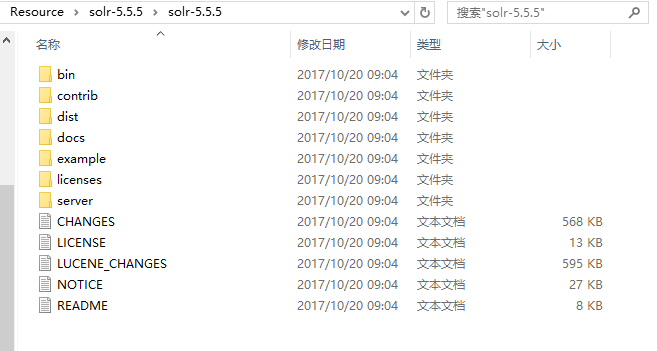
bin：solr的运行脚本
contrib：solr的一些软件/插件，用于增强solr的功能
dist：该目录包含build过程中产生的war和jar文件，以及相关的依赖文件
docs：solr的API文档
example：solr工程的例子目录
licenses：solr相关的一些许可信息
sever：文件夹下的Solr文件夹包含不同的集合或核心（core/collection）
2.3 运行环境
solr 需要运行在一个Servlet容器中，Solr默认提供Jetty（java写的Servlet容器），本教程使用Tocmat作为Servlet容器，环境如下：
Solr：Solr5.5.5
Jdk：jdk1.8._131
Tomcat：apache-tomcat-8
2.4 Solr整合tomcat
2.4.1 Solr Home与SolrCore
创建一个Solr home目录，SolrHome是Solr运行的主目录，目录中包括了运行Solr实例所有的配置文件和数据文件，Solr实例就是SolrCore，一个SolrHome可以包括多个SolrCore（Solr实例），每个SolrCore提供单独的搜索和索引服务。
example\solr是一个solr home目录结构，如下：
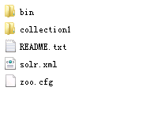
上图中“collection1”是一个SolrCore（Solr实例）目录 ，目录内容如下所示：
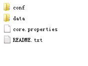
说明：
collection1：叫做一个Solr运行实例SolrCore，SolrCore名称不固定，一个solr运行实例对外单独提供索引和搜索接口。
solrHome中可以创建多个solr运行实例SolrCore。
一个solr的运行实例对应一个索引目录。
conf是SolrCore的配置文件目录 。
data目录存放索引文件需要创建
2.4.2 整合步骤
第一步：把F:\WorkSoft\solr-5.5.5\server\solr-webapp\webapp复制到tomcat 的webapp目录下，并改名为solr5
第二步：把F:\WorkSoft\solr-5.5.5\server\lib\ext目录下的所有的jar包添加到solr的\WEB-INF\lib
在solr的工程的WEB-INF下创建classes目录，然后将F:\WorkSoft\solr-5.5.0\server\resources\log4j.properties也复制到刚刚创建的classes目录下
把F:\WorkSoft\solr-5.5.0\dist的solr-dataimporthandler-5.5.0.jar和solr-dataimporthandler-extras-5.5.0.jar也放到solr的\WEB-INF\lib
第三步：配置solrHome和solrCore。
1）创建一个solrhome（存放solr所有配置文件的一个文件夹）。F:\WorkSoft\solr-5.5.5\server\solr目录就是一个标准的solrhome。
2）把solr-5.5.5\server\solr文件夹复制到D:\temp\0108路径下，改名为solrhome，改名不是必须的，是为了便于理解。
3）在solrhome下有一个文件夹叫做collection1这就是一个solrcore。就是一个solr的实例。一个solrcore相当于mysql中一个数据库。Solrcore之间是相互隔离。
i. 在solrcore中有一个文件夹叫做conf，包含了索引solr实例的配置信息。
ii. 在conf文件夹下有一个solrconfig.xml。配置实例的相关信息。如果使用默认配置可以不用做任何修改。
Xml的配置信息：
Lib：solr服务依赖的扩展包，默认的路径是collection1\lib文件夹，如果没有 就创建一个
dataDir：配置了索引库的存放路径。默认路径是collection1\data文件夹，如 果data文件夹，会自动创建。
requestHandler：
第六步：告诉solr服务器配置文件也就是solrHome的位置。修改web.xml使用jndi的方式告诉solr服务器。
Solr/home名称必须是固定的。
第七步：启动tomcat
第八步：访问http://localhost:8080/solr/
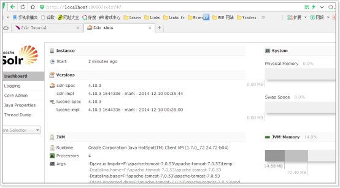
2.5 Solr后台管理
2.5.1 管理界面

2.5.2 Dashboard
仪表盘，显示了该Solr实例开始启动运行的时间、版本、系统资源、jvm等信息。
2.5.3 Logging
Solr运行日志信息
2.5.4 Cloud
Cloud即SolrCloud，即Solr云（集群），当使用Solr Cloud模式运行时会显示此菜单，如下图是Solr Cloud的管理界面：
2.5.5 Core Admin
Solr Core的管理界面。Solr Core 是Solr的一个独立运行实例单位，它可以对外提供索引和搜索服务，一个Solr工程可以运行多个SolrCore（Solr实例），一个Core对应一个索引目录。
添加solrcore：
第一步：复制collection1改名为collection2
第二步：修改core.properties。name=collection2
第三步：重启tomcat
2.5.6 java properties
Solr在JVM 运行环境中的属性信息，包括类路径、文件编码、jvm内存设置等信息。
2.5.7 Tread Dump
显示Solr Server中当前活跃线程信息，同时也可以跟踪线程运行栈信息。
2.5.8 Core selector
选择一个SolrCore进行详细操作，如下：

2.5.9 Analysis
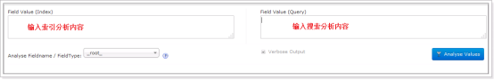
通过此界面可以测试索引分析器和搜索分析器的执行情况。
2.5.10 Dataimport
可以定义数据导入处理器，从关系数据库将数据导入 到Solr索引库中。
2.5.11 Document
通过此菜单可以创建索引、更新索引、删除索引等操作，界面如下：
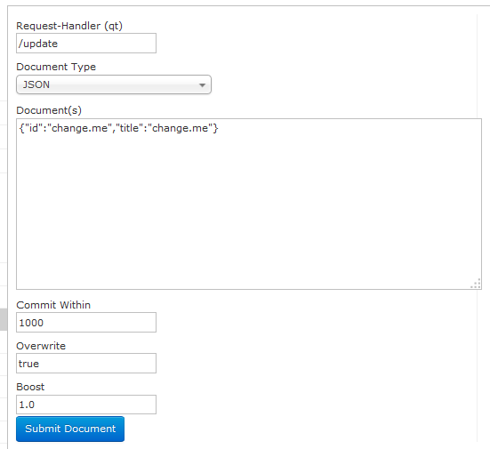
/update表示更新索引，solr默认根据id（唯一约束）域来更新Document的内容，如果根据id值搜索不到id域则会执行添加操作，如果找到则更新。
2.5.12 Query

通过/select执行搜索索引，必须指定“q”查询条件方可搜索。
2.6 配置中文分析器
.6.1. Schema.xml
schema.xml，在SolrCore的conf目录下，它是Solr数据表配置文件，它定义了加入索引的数据的数据类型的。主要包括FieldTypes、Fields和其他的一些缺省设置。
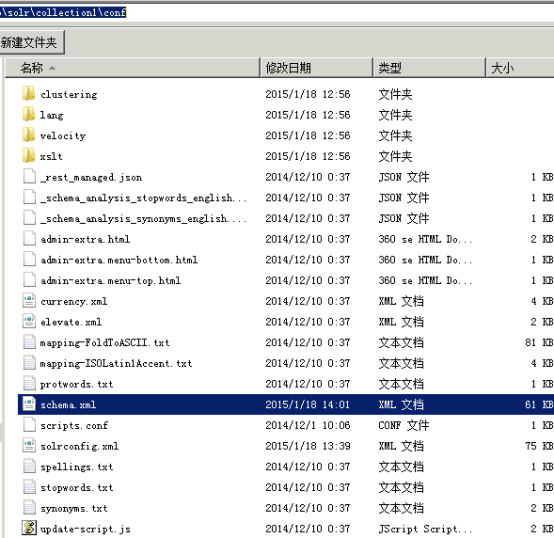
FieldType域类型定义 下边“text_general”是Solr默认提供的FieldType，通过它说明FieldType定义的内容：
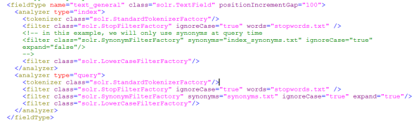
FieldType子结点包括：name,class,positionIncrementGap等一些参数：
name：是这个FieldType的名称
class：是Solr提供的包solr.TextField，solr.TextField 允许用户通过分析器来定制索引和查询，分析器包括一个分词器（tokenizer）和多个过滤器（filter）
positionIncrementGap：可选属性，定义在同一个文档中此类型数据的空白间隔，避免短语匹配错误，此值相当于Lucene的短语查询设置slop值，根据经验设置为100。
在FieldType定义的时候最重要的就是定义这个类型的数据在建立索引和进行查询的时候要使用的分析器analyzer,包括分词和过滤
索引分析器中：使用solr.StandardTokenizerFactory标准分词器，solr.StopFilterFactory停用词过滤器，solr.LowerCaseFilterFactory小写过滤器。
搜索分析器中：使用solr.StandardTokenizerFactory标准分词器，solr.StopFilterFactory停用词过滤器，这里还用到了solr.SynonymFilterFactory同义词过滤器。
Field定义 solr索引字段在solrhome\collection1\conf\schema.xml配置文件中，类似下面这些，包含在
与 之间的。
在fields结点内定义具体的Field，filed定义包括name,type（为之前定义过的各种FieldType）,indexed（是否被索引）,stored（是否被储存），multiValued（是否存储多个值）等属性。
如下：
xxxxxxxxxx<field name="name" type="text_general" indexed="true" stored="true"/><field name="features" type="text_general" indexed="true" stored="true" multiValued="true"/>multiValued：该Field如果要存储多个值时设置为true，solr允许一个Field存储多个值，比如存储一个用户的好友id（多个），商品的图片（多个，大图和小图），通过使用solr查询要看出返回给客户端是数组：
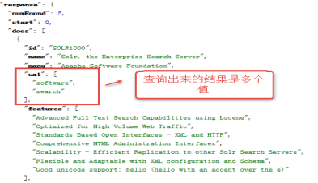
uniqueKey
Solr中默认定义唯一主键key为id域，如下：

Solr在删除、更新索引时使用id域进行判断，也可以自定义唯一主键。
注意在创建索引时必须指定唯一约束。
copyField复制域 copyField复制域，可以将多个Field复制到一个Field中，以便进行统一的检索：
比如，输入关键字搜索title标题内容content，
定义title、content、text的域：
根据关键字只搜索text域的内容就相当于搜索title和content，将title和content复制到text中，如下：
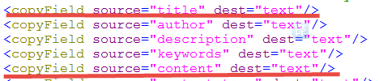
dynamicField（动态字段） 动态字段就是不用指定具体的名称，只要定义字段名称的规则，例如定义一个 dynamicField，name 为*i，定义它的type为text，那么在使用这个字段的时候，任何以i结尾的字段都被认为是符合这个定义的，例如：name_i，gender_i，school_i等。
自定义Field名为：product_title_t，“product_title_t”和scheam.xml中的dynamicField规则匹配成功，如下：
“product_title_t”是以“_t”结尾。
创建索引：
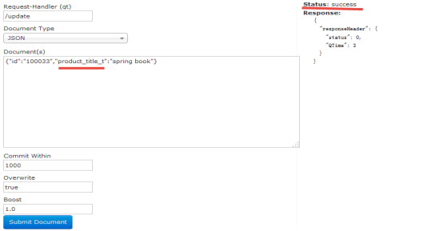
搜索索引：

2.6.2. 安装中文分词器
使用IKAnalyzer中文分析器。
第一步：把IKAnalyzer2012FF_u1.jar添加到solr/WEB-INF/lib目录下。
第二步：复制IKAnalyzer的配置文件和自定义词典和停用词词典到solr的classpath下。
第三步：在schema.xml中添加一个自定义的fieldType，使用中文分析器。
x<!-- IKAnalyzer--><fieldType name="text_ik" class="solr.TextField"> <analyzer class="org.wltea.analyzer.lucene.IKAnalyzer"/></fieldType>第四步：定义field，指定field的type属性为text_ik
xxxxxxxxxx<!--IKAnalyzer Field--> <field name="title_ik" type="text_ik" indexed="true" stored="true" /> <field name="content_ik" type="text_ik" indexed="true" stored="false" multiValued="true">第四步：重启tomcat
测试：

2.7 设置业务系统Field
如果不使用Solr提供的Field可以针对具体的业务需要自定义一套Field，如下是商品信息Field：
xxxxxxxxxx<!--product--> <field name="product_name" type="text_ik" indexed="true" stored="true"/> <field name="product_price" type="float" indexed="true" stored="true"/> <field name="product_description" type="text_ik" indexed="true" stored="false" /> <field name="product_picture" type="string" indexed="false" stored="true" /> <field name="product_catalog_name" type="string" indexed="true" stored="true" /> <field name="product_keywords" type="text_ik" indexed="true" stored="false" multiValued="true"/> <copyField source="product_name" dest="product_keywords"/> <copyField source="product_description" dest="product_keywords"/>
2.8 维护索引
2.8.1 添加/更新文档
添加单个文档

2.8.2 批量导入数据
使用dataimport插件批量导入数据。
第一步：把dataimport插件依赖的jar包添加到solrcore（collection1\lib）中
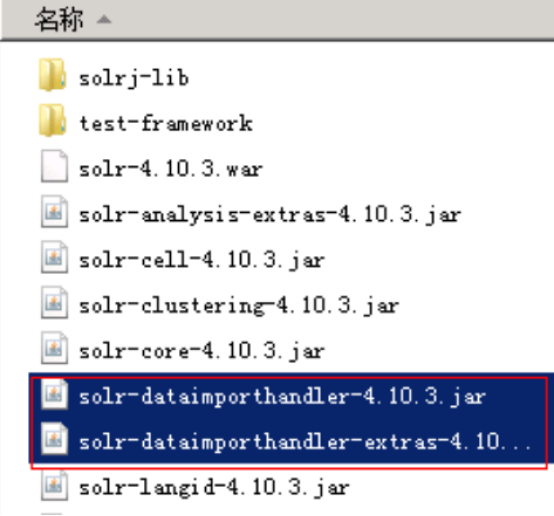
还需要mysql的数据库驱动。
第二步：配置solrconfig.mxl文件，添加一个requestHandler。
<requestHandler name="/dataimport"
class="org.apache.solr.handler.dataimport.DataImportHandler">
<lst name="defaults">
<str name="config">data-config.xml</str>
</lst>
</requestHandler> 第三步：创建一个data-config.xml，保存到collection1\conf\目录下
<?xml version="1.0" encoding="UTF-8" ?>
<dataConfig>
<dataSource type="JdbcDataSource"
driver="com.mysql.jdbc.Driver"
url="jdbc:mysql://localhost:3306/solr"
user="root"
password="qishimeiyoumima"/>
<document>
<entity name="product" query="SELECT pid,name,catalog_name,price,description,picture FROM products ">
<field column="pid" name="id"/>
<field column="name" name="product_name"/>
<field column="catalog_name" name="product_catalog_name"/>
<field column="price" name="product_price"/>
<field column="description" name="product_description"/>
<field column="picture" name="product_picture"/>
</entity>
</document>
</dataConfig>
第四步：重启tomcat
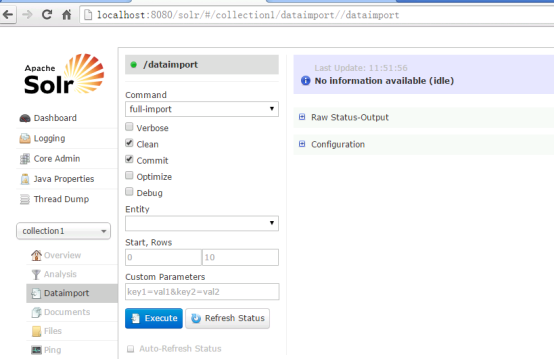
第五步：点击“execute”按钮导入数据 到入数据前会先清空索引库，然后再导入。
2.8.3. 删除文档(注意需要提交)
删除索引格式如下：
1） 删除制定ID的索引
<delete> <id>8</id> </delete>
2） 删除查询到的索引数据
<delete> <query>product_catalog_name:幽默杂货</query> </delete>
3） 删除所有索引数据
<delete> <query>*:*</query> </delete>
2.9 查询索引
通过/select搜索索引，Solr制定一些参数完成不同需求的搜索：
2.9.1 q
查询字符串，必须的，如果查询所有使用:
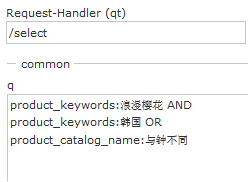
2.9.2 fq
（filter query）过虑查询，作用：在q查询符合结果中同时是fq查询符合的，例如：

过滤查询价格从1到20的记录。
也可以在“q”查询条件中使用product_price:[1 TO 20]，如下：
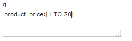
也可以使用“*”表示无限，例如：
20以上：product_price:[20 TO *]
20以下：product_price:[* TO 20]
2.9.3 sort
排序，格式：sort=
按价格降序

2.9.4 start
分页显示使用，开始记录下标，从0开始
2.9.5 rows
指定返回结果最多有多少条记录，配合start来实现分页。

显示前10条。
2.9.6 fl
指定返回那些字段内容，用逗号或空格分隔多个。

显示商品图片、商品名称、商品价格
2.9.7 df
-指定一个搜索Field

也可以在SolrCore目录 中conf/solrconfig.xml文件中指定默认搜索Field，指定后就可以直接在“q”查询条件中输入关键字。
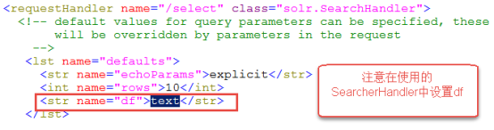
2.9.8 wt
(writer type)指定输出格式，可以有 xml, json, php, phps, 后面 solr 1.3增加的，要用通知我们，因为默认没有打开。
2.9.9 hl
-是否高亮 ,设置高亮Field，设置格式前缀和后缀。

第三节 使用SolrJ管理索引库
3.1 什么是solrJ
solrj是访问Solr服务的java客户端，提供索引和搜索的请求方法，SolrJ通常在嵌入在业务系统中，通过SolrJ的API接口操作Solr服务，如下图：
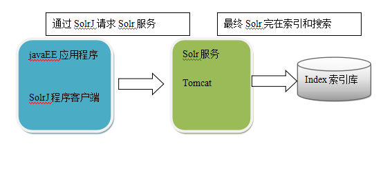
3.2 依赖的jar包
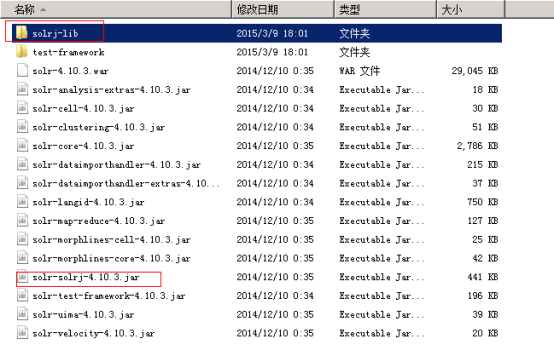
3.3 添加文档
3.3.1 实现步骤
第一步：创建一个java工程
第二步：导入jar包。包括solrJ的jar包。还需要 example中的lib下的ext中的日志包
第三步：和Solr服务器建立连接。HttpSolrServer对象建立连接。
第四步：创建一个SolrInputDocument对象，然后添加域。
第五步：将SolrInputDocument添加到索引库。
第六步：提交。
3.3.2 代码实现
xxxxxxxxxx// 新增数据 private static void addData() throws Exception { // 和solr服务器创建连接,//参数：solr服务器的地址 HttpSolrClient client = new HttpSolrClient("http://localhost:8080/solr5/user_core"); // 创建一个文档对象 SolrInputDocument document = new SolrInputDocument(); // 向文档中添加域 /* * 第一个参数：域的名称，域的名称必须是在schema.xml中定义的 第二个参数：域的值 */ document.addField("id", 110); document.addField("username", "李四"); document.addField("password", "55555"); // 新增文档对象,修改也是如此，主键存在就修改，不存在就新增 client.add(document); // 提交修改 client.commit(); }3.4 删除文档
3.4.1 根据id删除
xxxxxxxxxx// 删除数据 private static void delData() throws Exception { // 和solr服务器创建连接,//参数：solr服务器的地址 HttpSolrClient client = new HttpSolrClient("http://localhost:8080/solr5/user_core"); client.deleteById("3"); client.commit(); }3.4.2 根据查询删除
xxxxxxxxxx// 查询语法完全支持Lucene的查询语法。 // 根据查询条件删除文档 public static void delDataByQuery() throws Exception { //创建连接 HttpSolrClient solrServer = new HttpSolrClient("http://localhost:8080/solr5/user_core"); //根据查询条件删除文档 solrServer.deleteByQuery("*:*"); // 提交修改 solrServer.commit(); }3.5 修改文档
在solrJ中修改没有对应的update方法，只有add方法，只需要添加一条新的文档，和被修改的文档id一致就，可以修改了。本质上就是先删除后添加。
3.6 查询文档
3.6.1 简单查询
xxxxxxxxxx// 简单查询 private static void queData1() throws Exception { // 和solr服务器创建连接,//参数：solr服务器的地址 HttpSolrClient client = new HttpSolrClient("http://localhost:8080/solr5/user_core"); // 创建查询条件 SolrQuery query = new SolrQuery(); // 设置查询条件 query.setQuery("*:*"); // 获取响应对象 QueryResponse response = client.query(query); // 获取查询结果 SolrDocumentList list = response.getResults(); System.out.println("查询的结果数据数量：" + list.getNumFound()); for (SolrDocument d : list) { System.out.println(d.get("id")); System.out.println(d.get("username")); System.out.println(d.get("password")); } }3.6.2 复杂查询
xxxxxxxxxx// 复杂查询 private static void queData2() throws Exception { // 和solr服务器创建连接,//参数：solr服务器的地址 HttpSolrClient client = new HttpSolrClient("http://localhost:8080/solr5/user_core"); // 创建查询条件 SolrQuery query = new SolrQuery(); // 设置查询条件 // query.setQuery(""); query.setFilterQueries("id:[1 TO 100]"); query.setSort("id", ORDER.desc); query.setStart(0); query.setRows(10); // 获取响应对象 QueryResponse response = client.query(query); // 获取查询结果 SolrDocumentList list = response.getResults(); System.out.println("查询的结果数据数量：" + list.getNumFound()); for (SolrDocument d : list) { System.out.println(d.get("id")); System.out.println(d.get("username")); System.out.println(d.get("password")); } }3.6.3 复杂查询
xxxxxxxxxx// 其中包含查询、过滤、分页、排序、高亮显示等处理。 // 复杂查询索引 public void queData3() throws Exception { // 创建连接 HttpSolrClient solrServer = new HttpSolrClient("http://localhost:8080/solr5/"); // 创建一个query对象 SolrQuery query = new SolrQuery(); // 设置查询条件 query.setQuery("钻石"); // 过滤条件 query.setFilterQueries("product_catalog_name:幽默杂货"); // 排序条件 query.setSort("product_price", ORDER.asc); // 分页处理 query.setStart(0); query.setRows(10); // 结果中域的列表 query.setFields("id", "product_name", "product_price", "product_catalog_name", "product_picture"); // 设置默认搜索域 query.set("df", "product_keywords"); // 高亮显示 query.setHighlight(true); // 高亮显示的域 query.addHighlightField("product_name"); // 高亮显示的前缀 query.setHighlightSimplePre("<em>"); // 高亮显示的后缀 query.setHighlightSimplePost("</em>"); // 执行查询 QueryResponse queryResponse = solrServer.query(query); // 取查询结果 SolrDocumentList solrDocumentList = queryResponse.getResults(); // 共查询到商品数量 System.out.println("共查询到商品数量:" + solrDocumentList.getNumFound()); // 遍历查询的结果 for (SolrDocument solrDocument : solrDocumentList) { System.out.println(solrDocument.get("id")); // 取高亮显示 String productName = ""; Map<String, Map<String, List<String>>> highlighting = queryResponse.getHighlighting(); List<String> list = highlighting.get(solrDocument.get("id")).get("product_name"); // 判断是否有高亮内容 if (null != list) { productName = list.get(0); } else { productName = (String) solrDocument.get("product_name"); } System.out.println(productName); System.out.println(solrDocument.get("product_price")); System.out.println(solrDocument.get("product_catalog_name")); System.out.println(solrDocument.get("product_picture")); } }